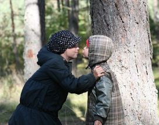
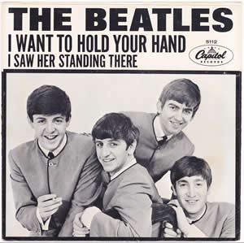

The Kissing Song
(Anonymous)
(insert boy’s name) and (insert girl’s name) sitting in a tree,
K- I -S -S -I –N- G (spell it out)
First comes love.
Then comes marriage.
Then comes the baby in the baby carriage.
Sucking his thumb,
Wetting his pants,
Doing the hula, hula dance.

Callout
Relationships in Canada
Friendships
Making new friends as you age: It's tough, but worth the effort
Mixed Relationships
Canada is leading the pack in mixed unions
Same-Sex Relationships
Same-sex couples in Canada in 2016
Relationships in Social, Historical, and Cultural Contexts
|
Relationships and Music
|

|
|
Madonna: “Papa Don’t Preach” Analysis
|
True or False Activity:
True or False
True or False
True or False
True or False
True or False
True or False
True or False
True or False
True or False
True or False